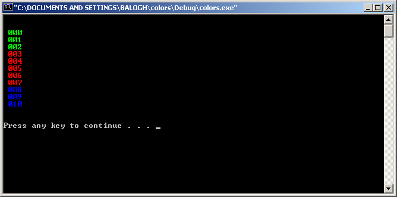
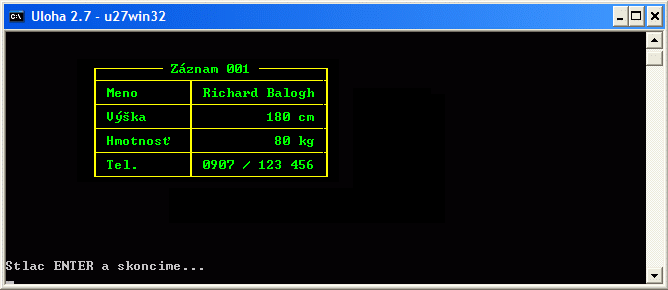

BLOK 2
Z nasledovných úloh neriešte všetky
Ako urobiť BLOK 2?
Druhý blok cvičení je navrhnutý tak, aby ste sa v jednotlivých úlohách postupne “dotkli” jednotllivých komponentov počítača. Keďže počítač sa skladá z mnohých podsystémov, aj úloh je relatívne veľa.
Tak isto ako v prvom bloku, všetky úlohy musíte mať naprogramované ako samostatné funkcie v jednom .c súbore, ktorý odovzdáte na konci bloku do AIS.
Nemusíte riešiť všetky, vyberte si tie, ktoré vás zaujmú tak, aby ste získali potrebný počet 16 bodov. Celkove je tu 12 úloh za 27 bodov. Viac ako 16 nemôžete získať. Úlohy odovzdávajte priebežne (primerne jednu-dve úlohy za cvičenie), najneskôr však v deviatomom týždni semestra.
Úlohy na cvičeniach prednášky dopĺňajú a rozširujú – predmet nefunguje takým spôsobom, že prednáška je “návod” a cvičenia priestor pre realizáciu. Vedomosti získavate tam aj tam.
Povinná Úloha
Počas tohto bloku sa musíte naučiť krokovať, resp. “debuggovať”. Ide o spôsob kontroly kódu (hľadania chýb – “bugov”).Váš kód si v tomto režime viete prechádzať krok za krokom a pozerať sa, aké sú hodnoty premenných, čo sa deje v pamäti, vnárať sa do funkcií a pod. Na úvod si pozrite tento návod.
Aby ste nestratili body, musíte počas tretieho bloku predviesť cvičiacemu, že viete program krokovať. Naučte sa však krokovať už teraz, počas druhého bloku. Konkrétne:
- Stanovenie breakpointov.
- Krokovanie (F10).
- Pridanie premennej do zoznamu “pozorovaných” premenných (pravý klik myšou a z menu vybrať Add watch)
- Vnorenie sa do funkcie (F11).
- Ukázanie adresy aspoň jednej premennej/poľa.
Úloha 2.1.1 (1b)
Vložte do C-programu kúsok assemblerovského kódu, ktorým vypočítate súčet dvoch premenných.
Tip:
- Ako základ môžete použiť tento program (Prerobím keď budem mať čas), ktorý inkrementuje premennú. Stačí doplniť druhú premennú a vymeniť inštrukciu INC za ADD.
- Ak vám vzorový program nejde skompilovať v MS Visual Studio, zmeňte cieľovú architektúru z x64 na x86 v combo box-e na hlavnej lište.
Zdroj:
- .., Assem… Čo? Aký assembler? (Prerobím keď budem mať čas)
- Výber strojových inštrukcií s popisom (Prerobím keď budem mať čas)
Úloha 2.1.2
Napíšte pomocou vloženého (embedded) asembleru C-program v ktorom použijete vlastnú funkciu na násobenie dvomi bez použitia súčinu.
Tip:
- Stačí ak si spomeniete, že násobenie dvoma v binárnej sústave znamená posunúť číslo o jedno miesto doľava. Ako základ môžete použiť opäť tento program (Prerobím keď budem mať čas) z predošlej úlohy, ktorý inkrementuje premennú. Stačí vymeniť inštrukciu INC za SHL.
Úloha 2.1.3
Napíšte pomocou vloženého (embedded) asembleru C-program s funkciou na prevod číslice (0 – 15) na príslušný ASCII znak predstavujúci hodnotu v hexadecimálnej sústave. Pre čísla 0 – 9 bude výstupom znak ‘0’ – ‘9’, pre čísla 10 – 15 znaky ‘A’ – ‘F’. Celé jadro programu musí byť napísané v jazyku symbolických inštrukcií, nesmietie použiť polia. Jazyk C smiete použiť len na výpis výsledku.
Tip:
- Tento kus programu v C urobí to isté: znak = cislo < 10 ? cislo + ‘0’ : cislo + 55;
- Ako základ môžete použiť znova tento program (Prerobím keď budem mať čas), ktorý inkrementuje premennú. Stačí vymeniť inštrukciu INC za ADD a doplniť test (CMP) s nejakým podmieneným skokom.
- Pri odovzdávaní zadania musíte preukázať znalosť ASCII TABUĽKY
Úloha 2.1.4
Napíšte pomocou inline asembleru a inštrukcie cpuid program, ktorý zistí, aký typ procesora máte v počítači (Intel, AMD, Cyrix,…). Výstup musí byť uložený v poli.
Tip:
- Inštrukcia cpuid očakáva v registri EAX číslo funkcie, v našom prípade 0. Výsledkom sú tri registre, ktoré treba uložiť do poľa a vypísať ako reťazec.
- Pri odovzdávaní zadania musíte vedieť vysvetliť, prečo tam tú nulu dávate.
Zdroj:
Úloha 2.2 (3b)
Viete už pracovať so smerníkmi (pointre). Viete ale, čo je naozaj v pointri uložené? Samozrejme, reálna adresa.
- Viete už pracovať so smerníkmi (pointre). Viete ale, čo je naozaj v pointri uložené? Samozrejme, reálna adresa.
- Ďalej deklarujte smerník na toto pole a vypíšte na obrazovku skutočnú adresu na ktorú ukazuje (napr. printf(“%p”,pointer); ).
- Potom zmeňte hodnotu adresy (pripočítajte jednotku). Zapíšte nejakú hodnotu na túto adresu a opäť vypíšte reťazec na obrazovku. Čo sa stalo?
- Nakoniec zmeňte hodnotu adresy na veľmi vysokú hodnotu (v miliónoch) a opäť sa pokúste na ňu niečo zapísať. Čo sa stane? Program by mal spadnúť. Porozmýšľajte prečo.
- Zakomentujte riadok z bodu 4 a doprogramujte body 1-3 aj pre pole dátového typu int. Pri odovzdávaní musíte vedieť vysvetliť, čo sú to smerníky/pointre a na čo slúžia.
Zdroj
Úloha 2.3.1 (2b)
So súbormi ste už pracovali. Stiahnite a uložte si do súboru tento text poviedky. Je napísaný v kódovaní ISO-8859-2, ale aby ste ho vo Windows mohli poriadne prečítať, musí byť v kódovaní CP-1250. Našťastie sa tieto dve kódovania líšia len v niekoľkch znakoch. Napíšte program, ktorý text prevedie do správneho kódovania. Čo to je kódovanie máte vysvetlené v kontrolných otázkach. Pre plný počet bodov zo zadania musíte tento termín vedieť vysvetliť.
Tip 1.:
- Ako stiahnuť a uložiť súbor s poviedkou? Kliknite pravým tlačidlom, zvoľte ‘Uložiť ako’ (Save as…) a uložte si súbor na disk aj s príponou .html. Výstupný súbor bude tiež mať príponu .html, takže text ľahko skontrolujete v internetovom prehliadači.
Tip 2.:
- Tu nájdete kompletnú tabuľku kódovania ISO-8859-2, Win-1250,ale zrejme vystačíte s tabuľkou, kde je len tých 8 rozdielnych znakov (Prerobím keď budem mať čas).
Tip 3.:
- V prípade práce s dátovým typom signed char budete musieť čísla väčšie ako 127 pretypovať:
- if (c == (char)165) c = (char)188;
Zdroj
Úloha 2.3.2 (1b)
Zaujíma vás, ako to dopadlo v príbehu z úlohy 2.3? Pokračovanie si môžete stiahnuť odtiaľto. Aha, že sa nedá prečítať? Musíte ho rozšifrovať. Našťastie je použitá veľmi jednoduchá šifra. Na každý znak je aplikovaná operácia logický XOR s číslom 27. Napíšte program, ktorý prečíta text zo súboru a každý znak pred výpisom dešifruje.
Tip 1.:
- Ako stiahnuť a uložiť súbor s poviedkou? Kliknite pravým tlačidlom, zvoľte ‘Uložiť ako’ (Save as…) a uložte si súbor na disk aj s príponou .html. Výstupný súbor bude tiež mať príponu .html, takže text ľahko skontrolujete v internetovom prehliadači.
Tip 2.:
- Šifrovanie pomocou exkluzívneho súčtu (Exclusive OR, XOR) sa používa hlavne preto, lebo ak platí Kod = Znak XOR Cislo, potom Znak = Kod XOR Cislo. Čiže Znak = (Znak XOR Cislo) XOR Cislo.
Tip 3.:
- Keďže v zašifrovanom súbore sa môžu vyskytnúť všelijaké znaky, odporúčame takýto súbor otvoriť nie v textovom (“r”), ale binárnom (“rb”) režime. Pre istotu ešte pripomeňme, že operátor XOR v jazyku C je ^.
Úloha 2.3.3 (3b)
Na diskovom poli bol uložený text o škodlivosti alkoholu. Žiaľ, v dôsledku poruchy jedného z diskov sa text poškodil. Našťastie to bolo RAIDové pole, takže text je možné zrekonštruovať. Z diskov sa podarilo prečítať bloky, ktoré patrili súboru s textom. Bloky sú štyri, je medzi nimi aj ten pokazený. Všetko, čo sa podarilo zachrániť je k dispozícii zabalené TU Zrekonštruujte chýbajúci text.
Aby ste získali plný počet bodov, musíte vedieť opísať jednotlivé typy RAID-ov – aj ktorý typ je v zadaní použitý. POZOR – zadanie v súčasnej forme funguje len pod OS Windows a súbory je nutné čítať v textovom režime.
Tip 1.:
- Prečítajte si čo je to vlastne RAID.
Tip 2.:
- Nie je tu síce uvedené, aká RAID štruktúra bola v poli použitá, ale skúste na to prísť sami. Pre istotu ešte pripomeňme, že operátor XOR v jazyku C je ^.
Úloha 2.4 (4b)
Napíšte program v jazyku C, ktorý dokáže prehrať PESNÍČKU, alebo VIDEO (vy si môžete vybrať).
Najprv si prečítajte, ako sa pracuje s multimédiami vo Windows API (Prerobím keď budem mať čas). Potom si vyskúšajte niektoré príkazy v interaktívnom programe TestMCI.exe (do okienka zadáte príkaz, ten sa hneď vykoná). Potom napíšte program na prehrávanie v jazyku C. Program musí mať možnosť zadať meno prehrávaného súboru, spustiť, pozastaviť a ukončiť prehrávanie.
Úvodná obrazovka programu musí mať v rámci možností pekný dizajn s vysvetlením jednotlivých funkcií. POUŽITE ASCII ZNAKY na vytvorenie grafického ohraničenia. Po ukončení prehrávania sa obrazovka vyčistí a opäť sa zobrazí úvodná obrazovka.
Tip 1.:
- Ak vám už v TestMCI.exe všetko funguje, prepíšte to do programu v jazyku C. Práca s multimediálnymi zariadeniami sa robí pomocou funkcie mciSendString() (treba #include ). Jednoducho vložte reťazce, ktoré ste zadávali v TestMCI.exe ako argumenty do funkcie mciSendString().
- Pozor: Musíte si prilinkovať knižničný súbor winmm.lib (vo Visual C++: Project >> Settings >> Link >> Object/library modules, dopíšte na koniec riadku winmm.lib). (Pre Dev-C++: Project >> Project Options >> Parameters >> Add Lib >> libwinmm.a)
Tip 2.:
- Aby ste sa nemuseli prehrabávať v hlbinách menu, môžete knižnicu pripojiť aj príkazom pre kompilátor priamo do záhlavia vášho zdrojového kódu: #pragma comment( lib, “winmm.lib” )
Tip 3.:
- Aby program nemusel pracovať s UNICODE, nastavte si projekt pre prácu v znakovom režime MultiByte
Zdroje:
- mciSendString() – popis funkcie [msdn]
- Zoznam mci príkazov
PO NOVOM LINUX SUPPORT:
Úloha 2.5.1 (1b)
Napíšte program, ktorý bude postupne vypisovať čísla od 0 po 50, pričom v závislosti od veľkosti čísla sa bude meniť jeho farba, napríklad pre čísla od 0 po 10 bude zelená, 11 až 22 červená a 23 až 35 modrá, atď. Rýchlosť výpisu na obrazovku obmedzte na cca 1 znak/sekundu.
Výpis musí byť v cykle a vo formáte 001 002 ako je na obrázku:
Tip 1.:
- V konzolovom režime je možné meniť aj farbu vypisovaného textu pomocou funkcie SetConsoleTextAttribute(hConsole, k); Pričom hConsole je handle konzoly, k je atribút farieb od 0 po 255.
- Aby ste mohli meniť farby, musíte najprv pomocou funkcie GetStdHandle získať handle na konzolu, je to podobné, ako keď pred prácou so súborom najprv získate smerník na súbor. Robí sa to napr. takto:
- Horeuvedené funkcie sú definované vo windows.h
HANDLE hConsole;
hConsole = GetStdHandle(STD_OUTPUT_HANDLE);
Tip 2.:
- Napíšte si pomocný program, ktorým zistíte farby prislúchajúce všetkým kombináciam k od 0 do 255
Tip 3.:
- Návod a vzorový program na prácu s časom
Zdroj:
- Čo je to handle? (Prerobím keď budem mať čas)
- SetConsoleTextAttribute()
- Console functions
- Using the console
- Colors and text attributes
Úloha 2.5.2 (3b)
Napíšte program, ktorý na miesto v okne zadané pri spustení súradnicami [x,y] vypíše tabuľku s informáciami o Vašej osobe. Parametre uvedené na obrázku sú ilustračné, ale musia byť zadané v premenných, nemôže byť celý výpis “natvrdo” naprogramovaný. Parametrom zobrazenia teda bude pozícia v okne a premenné s hodnotami vypisovaných údajov. Pri zmene niektorého údaja (napr. meno) sa musí rámik prispôsobiť textu, nie naopak:
Tip 1.:
- Farby viete meniť z úlohy 2.6. Ako sa text vypíše na konkrétnu pozíciu sa naučte z tohoto vzorového programu. Rámik vytvorte zo znakov s ASCII kódom > 127. Na zistenie, ktoré znaky potrebujete využite upravený program z úlohy 1.1, ktorým si vypíšete celú tabuľku ASCII znakov.
Zdroj:
Úloha 2.6
Napíšte program, ktorý po stlačení klávesy F1 vypíše návod na použitie, F2 spustí meranie a program skončí F10 alebo ESC. Meranie bude spočívať v tom, že program vygeneruje náhodný znak (stačí písmená), zobrazí ho do stredu okna a spustí meranie času. Meranie sa zastaví v okamihu, keď užívateľ stlačí rovnakú klávesu. Ak užívateľ stlačí niečo iné, program to bude ignorovať. Napokon program vypíše zmeraný čas, ktorý uplynie od vypísania po stlačenie rovnakej klávesy. Po prvom meraní ide ďalšie meranie a po ňom ďalšie, až kým používateľ program neukončí (použite cyklus). Návod na použitie musí mať pekný dizajn, použite nejaké ASCII znaky na vytvorenie ohraničenia návodu.
Príklad
Stlač: X …. 1,25 s stlačené X
Stlač: Z ….. 33,12 s stlačené postupne ABCDEF…Z
Koniec stlačené F10
Tip 1.:
- Návod a vzorový program na prácu s časom a knižnicou time.h
Tip 2.:
- Návod a vzorový program na prácu s časom a knižnicou casio.h
Tip 3.:
- Namiesto knižnice conio.h môžete použiť aj iné, napríklad curses.h, prípadne ncurses, používané v Unixovom svete.
Tip 4.:
- Win32 Vzorový program na detekciu kláves Alt, Ctrl a Shift vrátane rozpoznávania pohybu myši.Pozn.: treba kompilovať ako C++ projekt, nestačí obyčajné C. Používa štandartné funkcie WinApi. Na rozdiel od predošlého vie pracovať aj s myšou.
Zdroje:
- Snáď postačí tento Vzorový program a popis funkcie GetAsyncKeyState() a Kódy Virtual Key